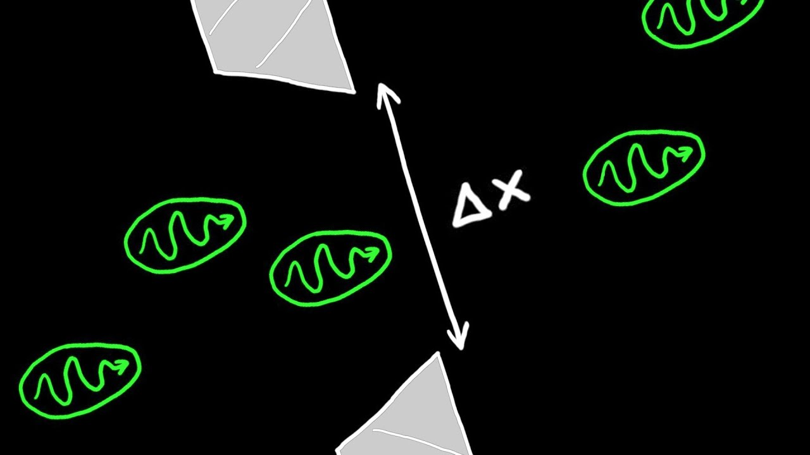
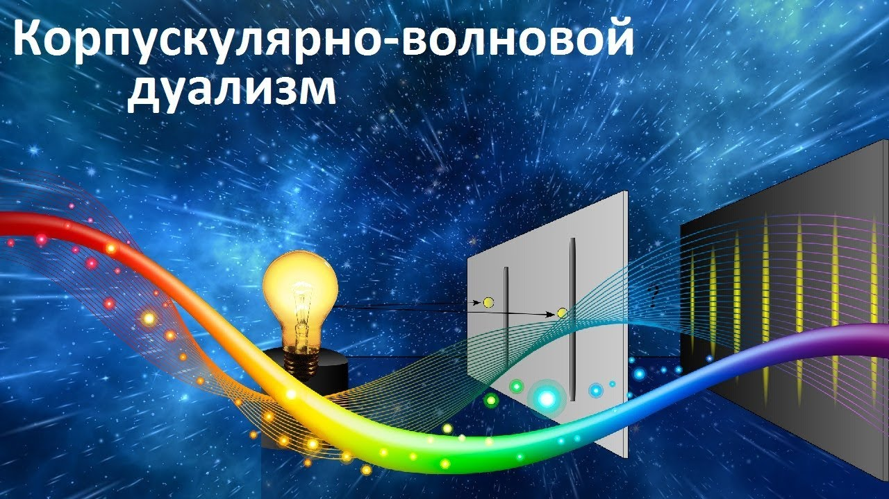

Принцип неопределённости Гейзенберга в квантовой механике — фундаментальное соображение (соотношение неопределённостей), устанавливающее предел точности одновременного определения пары характеризующих систему квантовых наблюдаемых, описываемых некоммутирующими операторами (например, координаты и импульса, тока и напряжения, электрического и магнитного полей)

Корпускулярно-волновой дуализм (или квантово-волновой дуализм) — свойство природы, состоящее в том, что материальные микроскопические объекты могут при одних условиях проявлять свойства классических волн, а при других — свойства классических частиц. Типичные примеры объектов, проявляющих двойственное корпускулярно-волновое поведение — электроны и свет